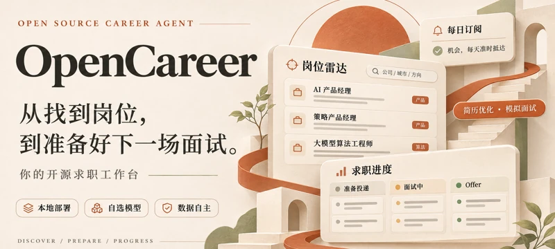

OpenCareer
面向 AI 和互联网岗位的开源求职工作台
我在字节跳动做过飞书多维表格智能体的意图路由、产品设计和评测。工作之外，我开发了开源求职工作台 OpenCareer，也把日常用到的办公流程做成了智能体技能。
面向 AI 和互联网岗位的开源求职工作台
工程创新设计原型。多个智能体分步澄清问题、分析技术矛盾，再结合专利检索生成可回溯的设计方案。
字节跳动
技术影响力：持续在字节内部技术社区 ByteTech 输出 AI / Agent 技术内容，5 次登上首页文章周榜，获评「AI 知识达人」（社区 Top 3%），内容创作量超过 92% 平台创作者。
背景：多维表格承载用户的数据资产与业务系统，此前 AI 以建表、搭业务系统等功能嵌入，接不住用户的开放式 AI 诉求。目标：将其从特定场景的 AI 工具，改造为能理解意图、调度工具、持续执行的通用 Agent。
我的职责：需求 owner，主导 5 项功能从需求定义、方案设计到上线全量的完整迭代：
赛道调研与差距定位：实测 8 款办公 Agent（WorkBuddy / QwenWork / Kimi Work / GenSpark 等），拆解记忆分层、上下文压缩与 Agent Harness 策略位，提炼「交互-能力-沉淀-集成-基座」五层框架；识别多维表格智能体在统一入口、意图路由、能力感知和持续任务上的差距，作为后续需求输入。
意图路由 (Decision Agent)：针对多能力 Agent 在复杂指令下存在错误路由与能力误调用的问题，负责意图分发链路的产品设计与上线，涉及智能体的 Workflow 编排、React架构与 Agent Harness —强制意图直连指定 domain、SpecDoc 状态判定、domain 拒识后回流重分配；配套设计 3×3意图路由评测方案完成验收。
Trigger 数据分析与归因：从用户实际使用数据出发，清洗 8,664 条未执行明细、抽样回看执行 trace，发现 46% 的异常 case 存在有效条件缺失、复杂逻辑被迫写进提示词；提出AI/手动配置双向切换、自然语言生成结构化条件方案，提高任务执行成功率 10%。
需求推进：从用户 case 与数据中发现迭代点，推动WEB端&移动端 chatbot权限申请、工作流复制、触发器模板推荐、模型切换、IM 使用增强三项需求，全流程负责 PRD 与策略制定、技术评审、单测走查、灰度与全量。
背景： TikTok 研发 PMO 团队在项目管理、知识检索等场景的大量重复性工作， AI 使用与开发门槛较高。 目标：以 AI Coding / Agent Skill 的方式将高频工作流封装为可复用 AI 能力，推动项目管理、知识获取等场景的 AI 提效。
我的职责：负责团队 AI 提效需求挖掘及方案开发，主导 Agent Skills、Meego 项目管理增强、团队知识库等方向从需求分析、方案设计到开发上线：
团队知识库：面向 PMO 团队沉淀的 1000+ 项目文档、流程规范与历史经验，构建团队级 RAG 知识库，完成多源文档解析清洗、语义检索与答案溯源链路，使成员可通过自然语言完成跨文档知识检索，降低新人及运营同学查找内部信息的门槛。
Agent Skills：围绕 PMO 高频办公流程，基于 OpenClaw、Hermes 等 Agent 设计并开发 10+ Skills，覆盖项目管理、会议室预订、多文档处理、内部知识检索、浏览器自动化等场景；将通用能力进一步开源至 ClawHub，2 个 Skills 累计下载量 2.1K+。
Meego 项目管理增强：针对需求信息分散、复杂筛选与查询操作成本高的问题，打通 Meego 项目需求看板，将工作项、状态、负责人、优先级、排期等项目数据封装为 Agent 可调用能力，降低 PMO 日常项目跟踪和信息获取成本。
AI 工程化沉淀：开发 Skill Creator Pro等工具，将 Skill 开发中的需求澄清、开发测试与交付流程进一步标准化，降低后续 Agent Skill 的开发与维护成本。

把四个模型放进 OpenCareer 的六道工程任务中，比较 24 次独立执行的完成情况、时间和估算费用。

把文案、文档或项目说明做成 3:4 中文封面。六种版式覆盖工具演示、课程清单和创作教程。

岗位雷达、投递跟进、模拟面试与每日订阅。
把需求澄清、开发、测试与交付串成一套技能开发流程。

用微信小程序记录两个人的饮食与日常。

按地点、时间与人数查找可用会议室，完成预订。
从飞书文档提取结构，自动生成白板。
让编程助手检索 Tika 企业知识库。
在浏览器新标签页浏览 AI 热点，并推送到团队群。
聚合 GitHub、X 等来源的每日热点。
论文代码、匿名化样例与稳健性分析结果。
硕士（推免） · 工业工程与管理
学士 · 工业工程 · GPA 3.83/4.00
相关项目：在低空经济供应链智能体中，使用知识图谱检索多层供应关系。